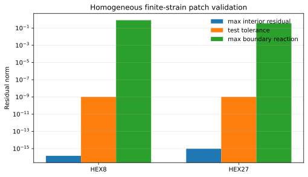
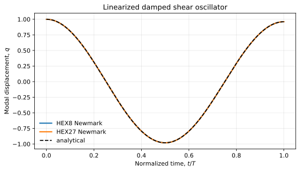
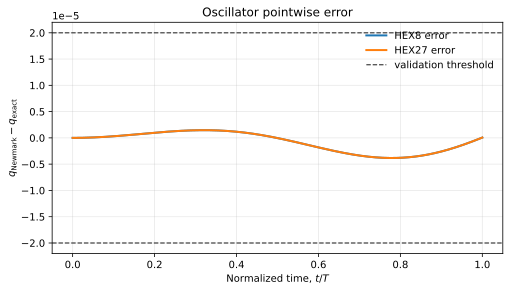

Mooney-Rivlin Kelvin-Voigt Newmark
This page documents the validation setup for the generated finite-strain operator GeneratedMooneyRivlinKelvinVoigtNewmark. The material is a compressible Mooney-Rivlin solid with a fully implicit finite-strain Kelvin-Voigt viscous stress, integrated in time with Newmark.
Material Operator
The displacement is \(u(X,t)\), with deformation gradient
The elastic energy density used by the generated operator is
where \(I_1 = \operatorname{tr}(C)\), \(I_2 = \frac{1}{2}(I_1^2-\operatorname{tr}(C^2))\), and \(C=F^T F\).
The viscous first Piola stress is
For Newmark, the generated operator receives a velocity-shift field \(z\) through the previous field:
Geometry and Time Update
The dynamic problem solved by the driver is
with Newmark predictor
and acceleration reconstruction
The velocity shift used by the viscous operator is
HEX8 or HEX27"] --> state["Newmark state
u_n, v_n, a_n"] state --> predictor["predictor
uhat, z_n"] predictor --> nonlinear["Newton solve for
u_{n+1}"] nonlinear --> material["MR elastic residual
KV viscous residual"] nonlinear --> inertia["lumped inertia residual"] material --> update["update
v_{n+1}, a_{n+1}"] inertia --> update
Validation 1: Homogeneous Finite-Strain Patch
The first validation imposes an affine displacement field
where \(A\) and \(B\) are constant matrices. Therefore \(F\), \(D\), \(P_e\), and \(P_v\) are constant in the body, so the internal force must satisfy
The test checks that all interior nodal residuals are zero to roundoff while boundary nodes retain the expected reactions.
X in Omega_0"] --> affine["affine map
x = X + A X"] affine --> deformed["homogeneous deformation
F = I + A"] rate["constant rate
Fdot = B"] --> viscous["constant D
constant P_v"] deformed --> stress["constant P_e + P_v"] viscous --> stress stress --> balance["Div_X(P_e + P_v) = 0
interior residual = 0"]

Validation 2: Linearized Damped Shear Oscillator
The second validation uses a small-amplitude shear mode on a prismatic brick:
phi = 0"] --- mid["0 < X_1 < L
transverse shear mode
u_2 = q(t) sin(pi X_1/L)"] --- xL["X_1 = L
phi = 0"] mid --> ode["project FE residual onto phi
m qddot + c qdot + k q = 0"] ode --> exact["closed-form underdamped
analytical q(t)"]
For the selected Mooney-Rivlin energy, the small-strain shear modulus is \(4\mu\). The modal equation is
with continuum coefficients
For the underdamped case, the analytical solution is
where


Reproducing the CSV and Plots
From the SFEM source repository, build the two validation targets and run:
PYTHONPATH=python venv/bin/python workflows/mooney_rivlin_kelvin_voigt_newmark/generate_validation_csv_and_plots.pyThis writes:
homogeneous_residuals.csvoscillator_metrics.csvoscillator_samples.csvhomogeneous_residuals.svgoscillator_response.svgoscillator_error.svg
By default the files are written to workflows/mooney_rivlin_kelvin_voigt_newmark/validation.